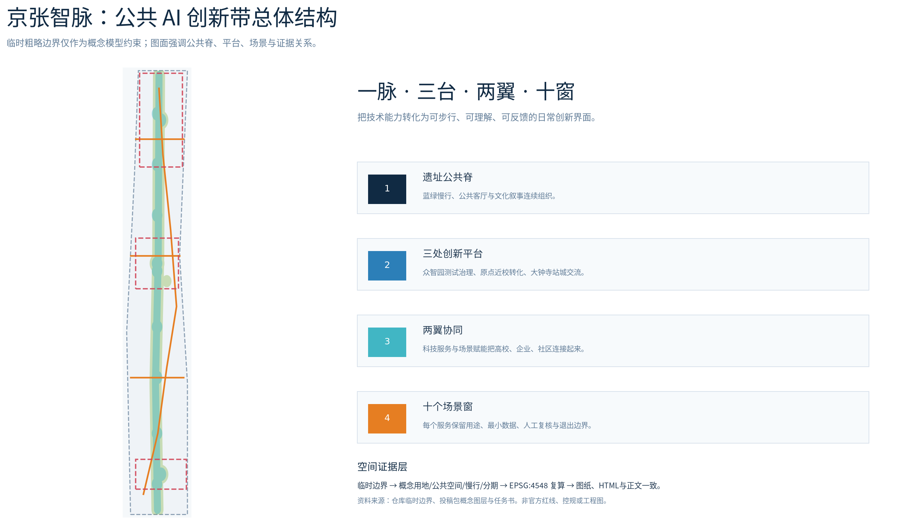
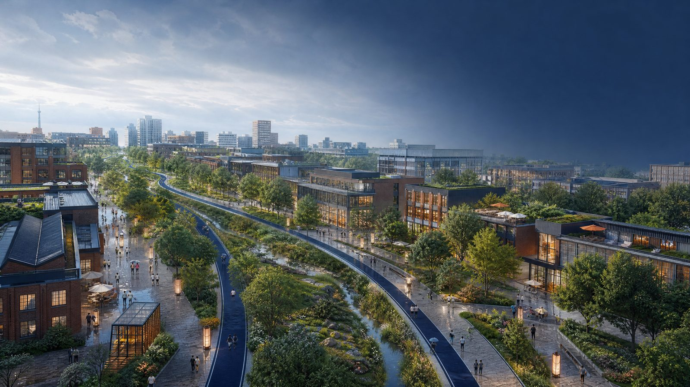
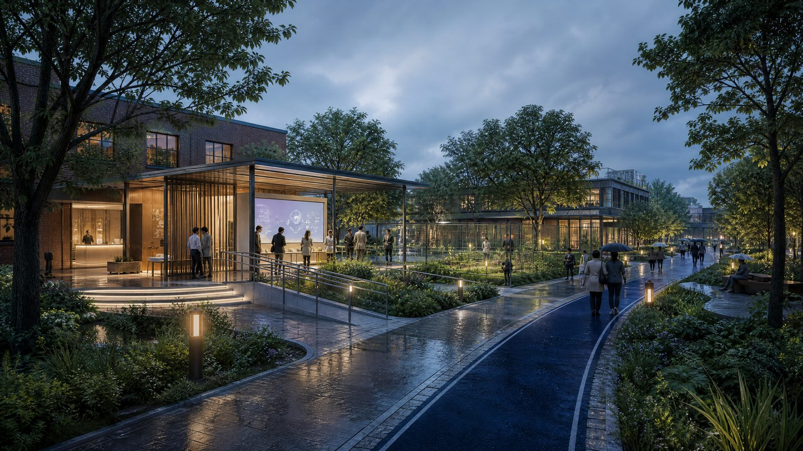
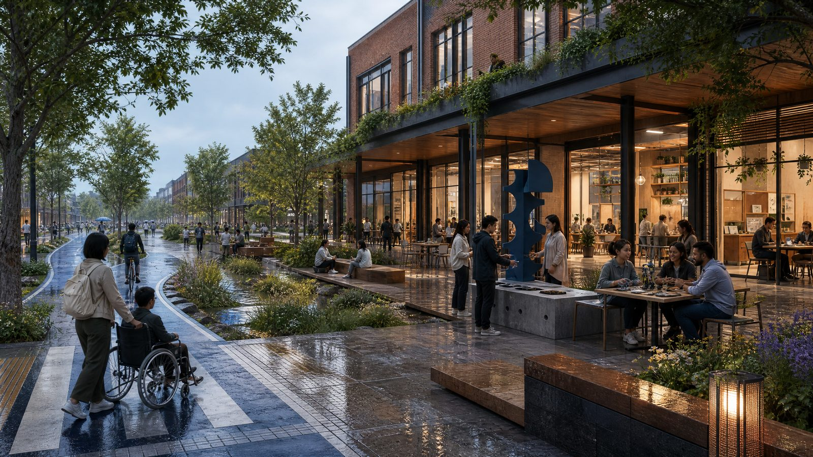
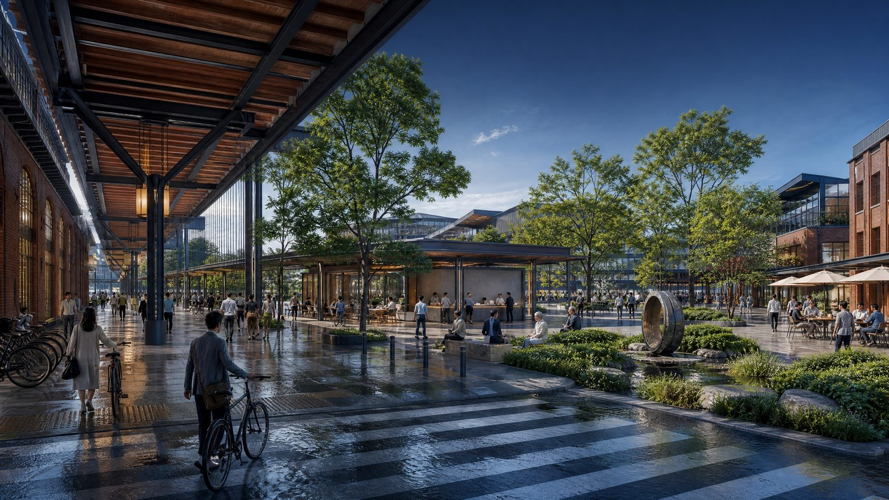
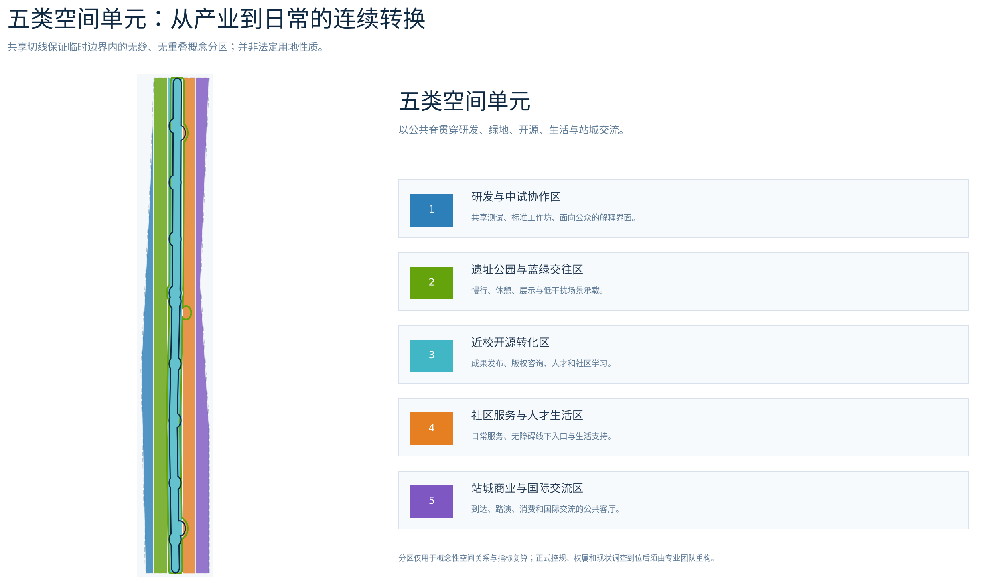
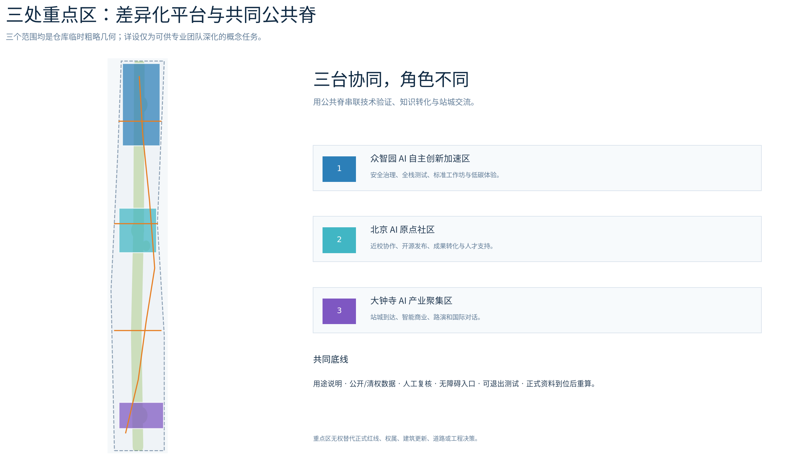
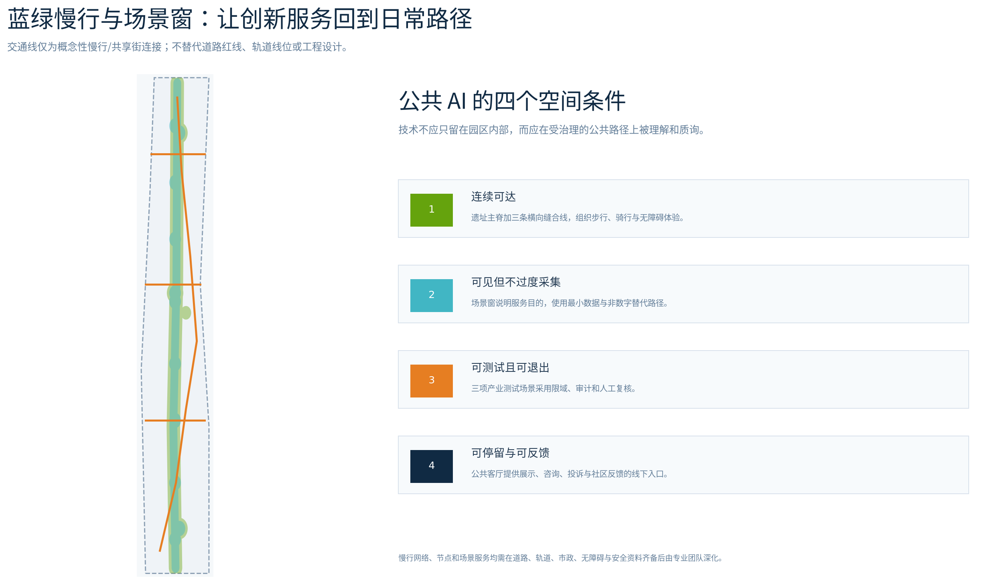
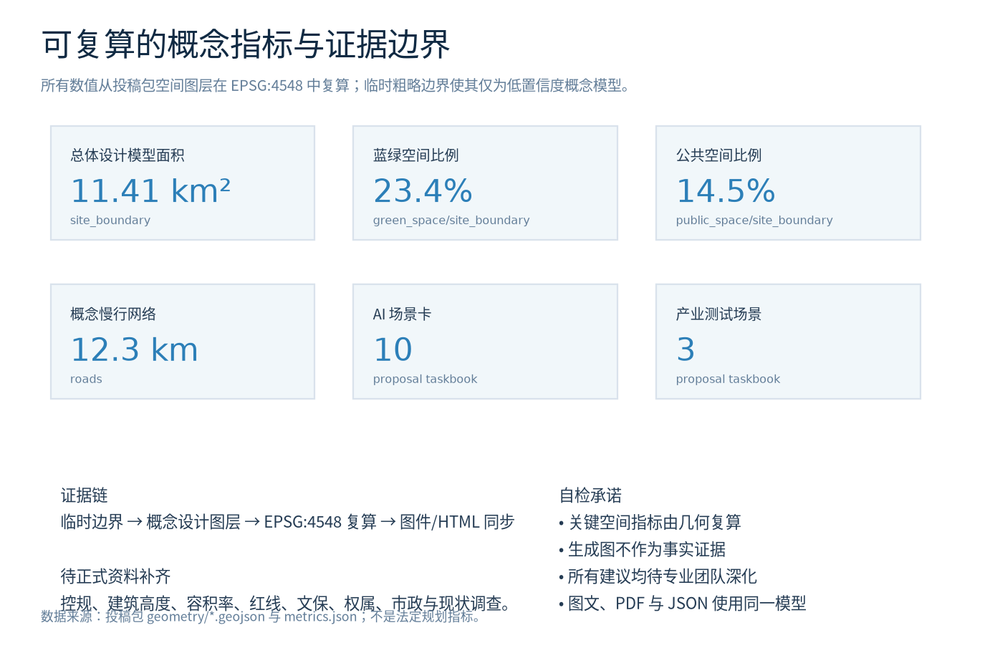

京张智脉：可被看见的公共 AI 创新带
临时边界条件下的概念性城市设计与证据工作台
重要披露. 本页只展示可供讨论和复算的概念模型。投稿边界与三处重点区为临时粗略 geometry，不是 official redline、法定控规或工程图。
三层范围
43.6 km² / 约11.4 km² / 3 areas
核心指标
23.4% blue-green · 14.5% public
AI 场景
10 cards · 3 limited tests · 5 personas
自检状态
Pre-finalization: structured layers ready
总览地图

图层由投稿包 GeoJSON 派生。
GPT 概念情景图（非证据）
四张 GPT 图像只表达空间氛围和服务体验目标；它们不是现状、测绘、法定红线、审批渲染或工程承诺。




生成方法、提示词摘要、版权和局限见 assets/media/scene-visuals-rights.md。
用地分区

重点区域

交通慢行 · 蓝绿公共空间

建筑与更新项目
概念建筑基底和更新标签仅用于专业深化比选，不表示对任何现状建筑、权属或拆除作出决定。
AI 场景
十张场景卡均有用途说明、最小数据、人工复核与退出边界；其中三张为限域测试验证场景。
核心指标
11.41 km² · 23.4% · 14.5%

任务覆盖
公告1.3、1.4、1.5及agent.1—agent.6已映射至方案、图层、指标、PDF和本页；详见 compliance_matrix.json。
自检状态
提交前将运行 deterministic validation、空间审查、视觉包装和专业证据审查。PASS 仅表示进入评审的基础条件，不代表批准或实施。
来源
官方公告、清权任务书、仓库来源登记、临时 geometry 与完整来源清单见 sources.json。
假设
正式边界、控规、权属、现状调查、文保和市政资料到位后，须整体重算。